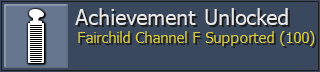
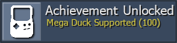

Community News
 By
RANews
By
RANews
Contents
Softcore Points Update
The contribution of points earned in softcore mode toward a user’s rank on the main leaderboard has long been a point of contention within the RetroAchievements community. After some deliberation among RetroAchievements staff, a new framework for the main leaderboard and softcore points has been created.
More information on the changes can be found here.
RA Olympics 2022
The RA Olympics 2022 Edition is currently being formed! This year we’re looking to add some new team members to increase the amount of people that will be involved with the planning and development process. The current roles for the event are:
- Shoutcaster/Streamer
- Referee
- Developer of Leaderboards
If any of these roles interest you, please fill out this survey here.
If you have any question(s), please reach out to voiceofautumn.
Console Support
Fairchild Channel F

Support for Fairchild Channel F has been rolled out. You can use the FreChaF core and earn achievements for the 21 currently supported sets.
Mega Duck

Support for Mega Duck has been rolled out. You can use the SameDuck core and earn achievements for the 20 currently supported sets.
PlayStation 2
While there is no ETA on the release of PlayStation 2 support, that hasn’t stopped the development team from working on sets to make the rollout the biggest yet. Take a look at the current sets that will be available on PlayStation 2 release.

 Shmelyoff
Shmelyoff
 Excessiveiser
Excessiveiser
 TeddyWestside
TeddyWestside

 LogicalFallacy
LogicalFallacy
 Cadaxar
Cadaxar
 pinguupinguu
pinguupinguu
 ventuz
ventuz
 Anic
Anic
 MGNS8M
MGNS8M


 AlexGatao
AlexGatao


 wilhitewarrior
wilhitewarrior Snow
Snow
 gollawiz
gollawiz


 timenoe
timenoe![Pac-Man World 2 [Subset - Bonus]](https://retroachievements.org/Images/059008.png)


 Griffin
Griffin


 voiceofautumn
voiceofautumn
 DarkyAndreas
DarkyAndreas


 Chawk
Chawk

 SporyTike
SporyTike

 Bryan1150
Bryan1150
 SlashTangent
SlashTangent![TimeSplitters 2 [Subset - Platinum Trophies]](https://retroachievements.org/Images/058285.png)


 suXin
suXin
 FBernkastelKues
FBernkastelKues
Site Updates
RAWeb Version 1.89.1
- Don’t show authorization message for non-admins by @Jamiras in #1041
- Validate Fairchild Channel F and Mega Duck on site. by @Snow in #1066
Quality Assurance
- Various achievement descriptions updated for Waku Waku 7.
- Approved for DQ2:
- Various discussions regarding game naming and tagging.
- If
~Demo~or~Prototype~tags are used alongside~Hack~or~Homebrew~, they they should comne afterwards. - In cases where a game is unlicensed and is actually just a hack of another game, then
~Hack~would be used instead of~Unlicensed~. - Move A/An/The articles to the back of a title when there is a pipe separator between regional titles.
- Do not link bootlet/pirate games to the hubs for their series.
- When both English and Japanese titles are used in an RA entry’s title, the Japanese title should only be first when the game was never officially released in English, making whatever English title used an unofficial title.
- If
Developer Compliance
- Approved sets:
- ~Hack~ Pokemon Emerald Version: Party Randomizer Plus
- ~Hack~ Dragoon X Omega II - Easy Mode
- ~Demo~ Ridge Racer Turbo
- Armored Core: Master of Arena (Community submitted leaderboards)
- Dragon Ball Z: The Legacy of Goku II passed to DevQuest team for DQ13 missing content.
- Tales of Phantasia reauthored to Ryudo.
- Demoted the following after a community vote:
DevQuest
DevQuest Awards
![[DevQuest 001] Ticket Massacre](https://retroachievements.org/Images/044438.png) [DevQuest 001] Ticket Massacre
[DevQuest 001] Ticket Massacre
![[DevQuest 002] Summer Set Repair](https://retroachievements.org/Images/044439.png) [DevQuest 002] Summer Set Repair
[DevQuest 002] Summer Set Repair
 TheMysticalOne for Final Fantasy IV Advance (Game Boy Advance), Castlevania III: Dracula’s Curse (NES) & Batman: The Video Game (Mega Drive)
TheMysticalOne for Final Fantasy IV Advance (Game Boy Advance), Castlevania III: Dracula’s Curse (NES) & Batman: The Video Game (Mega Drive)
![[DevQuest 006] The Unwanted](https://retroachievements.org/Images/045565.png)
![[DevQuest 007] Most Wanted](https://retroachievements.org/Images/046249.png)
![[DevQuest 008] World Traveler](https://retroachievements.org/Images/047727.png)
 televandalist for Ys vs. Sora no Kiseki: Alternative Saga (PlayStation Portable) & Last Imperial Prince (PC-FX)
televandalist for Ys vs. Sora no Kiseki: Alternative Saga (PlayStation Portable) & Last Imperial Prince (PC-FX)
![[DevQuest 009] Launch Party!](https://retroachievements.org/Images/048656.png)
 MaddieKittyTV
MaddieKittyTV![[DevQuest 010] It Takes Two](https://retroachievements.org/Images/049337.png)
 wolfman2000 for Sega Smash Pack - Volume 1 (Dreamcast) & Sonic Jam (Saturn)
wolfman2000 for Sega Smash Pack - Volume 1 (Dreamcast) & Sonic Jam (Saturn) WanderingHeiho for Ys I & II Chronicles (PlayStation Portable) & Sonic Jam (Saturn)
WanderingHeiho for Ys I & II Chronicles (PlayStation Portable) & Sonic Jam (Saturn)
![[DevQuest 011] Happy Birthday RA!](https://retroachievements.org/Images/049821.png)
- wolfman2000 for Judge Dredd (Mega Drive)
- WanderingHeiho for Sonic 3 & Knuckles [Subset - Bonus] (Mega Drive)
![[DevQuest 012] Hacker's Habit](https://retroachievements.org/Images/052519.png)
 Lewis50248 for ~Hack~ Castlevania: Serenade Under the Moon (Game Boy Advance) & ~Hack~ Sonic: Into the Void (Mega Drive)
Lewis50248 for ~Hack~ Castlevania: Serenade Under the Moon (Game Boy Advance) & ~Hack~ Sonic: Into the Void (Mega Drive)- WanderingHeiho for ~Hack~ domenyX vs Coronavirus (SNES) & ~Hack~ Sonic 3 and Amy Rose (Mega Drive)
 zxmega for ~Hack~ Ultimate Mortal Kombat 3 Plus (Arcade) & ~Hack~ Rockman 7 EP (SNES)
zxmega for ~Hack~ Ultimate Mortal Kombat 3 Plus (Arcade) & ~Hack~ Rockman 7 EP (SNES)- wolfman2000 for ~Hack~ Rockman 3: The Last of Mushroom Kingdom?! (NES) & ~Hack~ Metroid: The Blue Plague (SNES)
![[DevQuest 016] Wish This Set](https://retroachievements.org/Images/058480.png)
 ladynadiad
ladynadiadVet Developer Progress
Vet Dev I
Vet Dev III
 DanielARP
DanielARP Suffa28
Suffa28Vet Dev IV
Vet Dev V
 AlmightyXor
AlmightyXor
 blendedsea
blendedsea
 Hotscrock
Hotscrock
 Blazekickn
Blazekickn
 Searo
Searo siouxerskate
siouxerskate TheJediSonic
TheJediSonic valts
valts